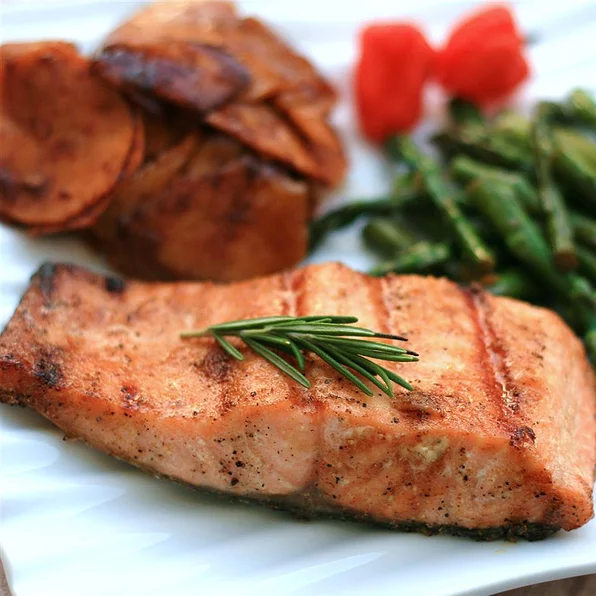

Cardamom Maple Salmon

Description
This is a great recipe for a slightly exotic flavor of Indian inspiration with a maple twist. The flavor is exceptional, delicious, and unique. Orange zest may be added for an extra flavor twist.
Ingredients
- 1 ½ teaspoons salt
- 1 teaspoon paprika
- 1 teaspoon ground cardamom
- 1 teaspoon ground coriander
- ½ teaspoon ground black pepper
- ¼ cup grapeseed oil
- 2 tablespoons maple syrup
- 1 (2 pound) salmon fillet, cut into 3-inch pieces
Steps
- Stir salt, paprika, cardamom, coriander, and black pepper together in a bowl. Add oil and maple syrup and stir until evenly combined.
- Preheat a non-stick frying pan over medium-high heat, about 350 degrees F (175 degrees C).
- Dredge salmon pieces through the maple syrup mixture until evenly coated on all sides.
- Cook salmon in the preheated pan until fish flakes easily with a fork, 5 to 7 minutes per side.